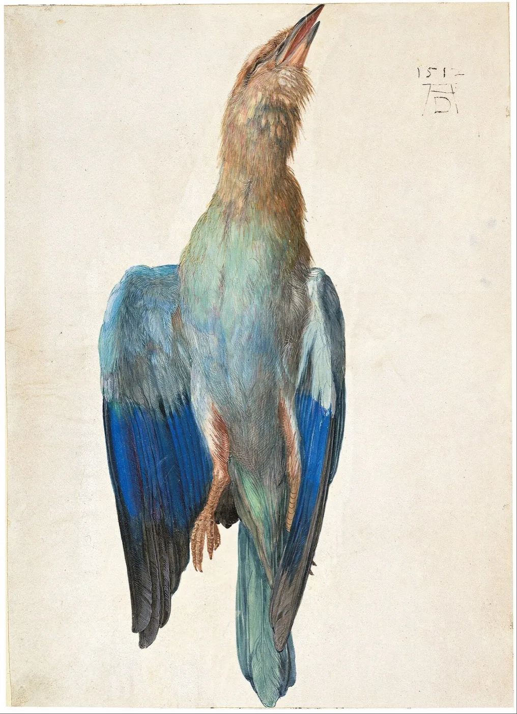
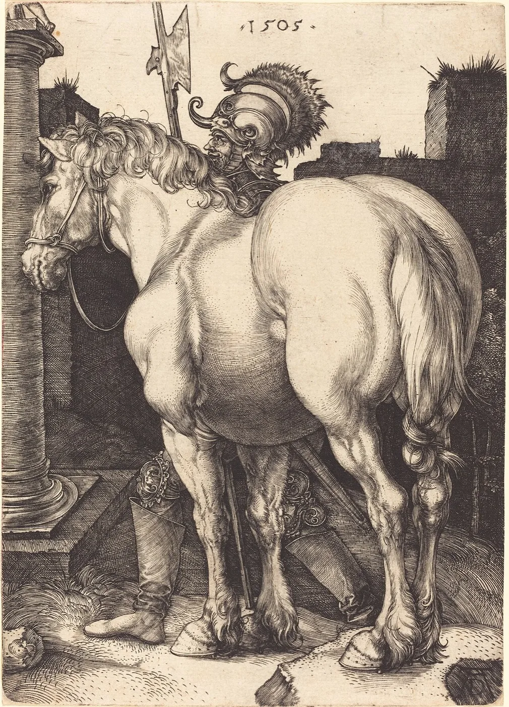
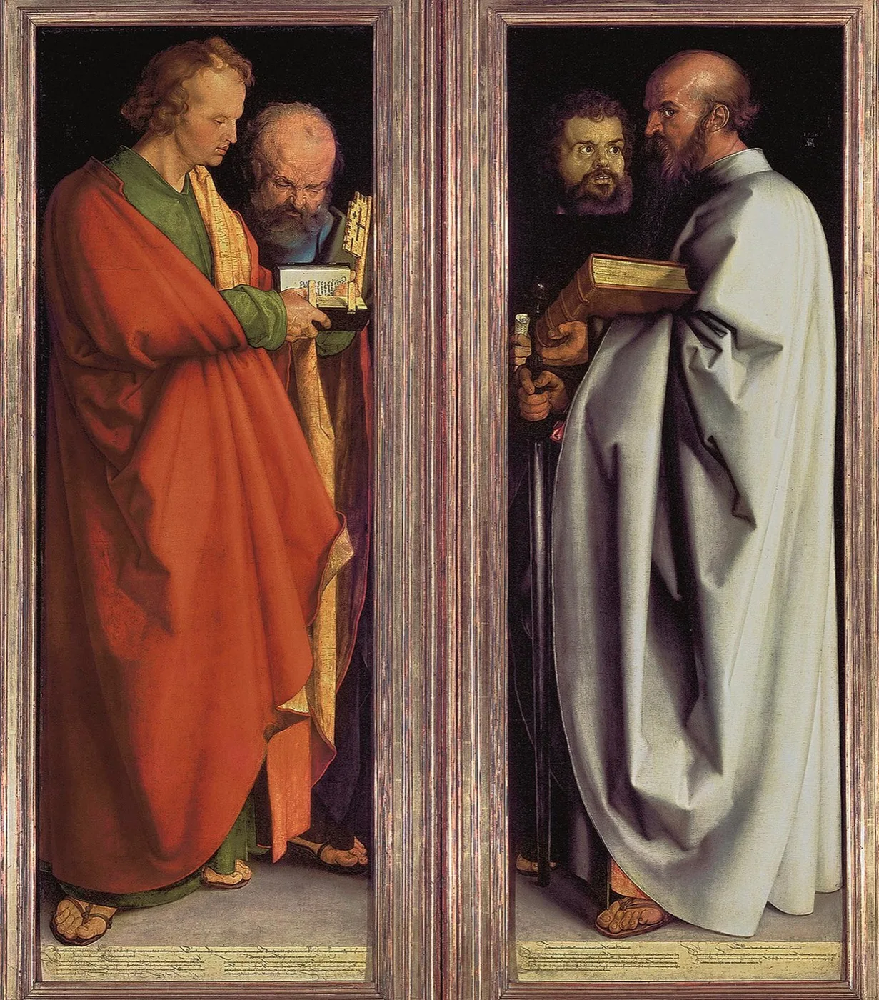
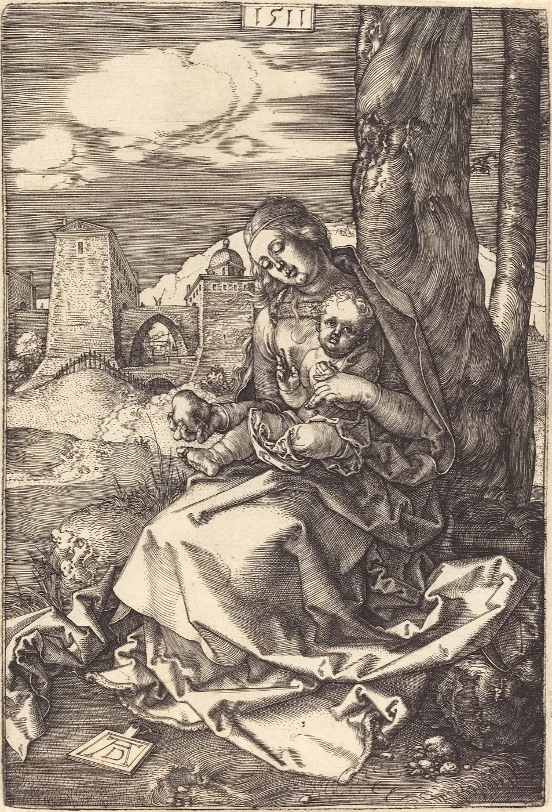
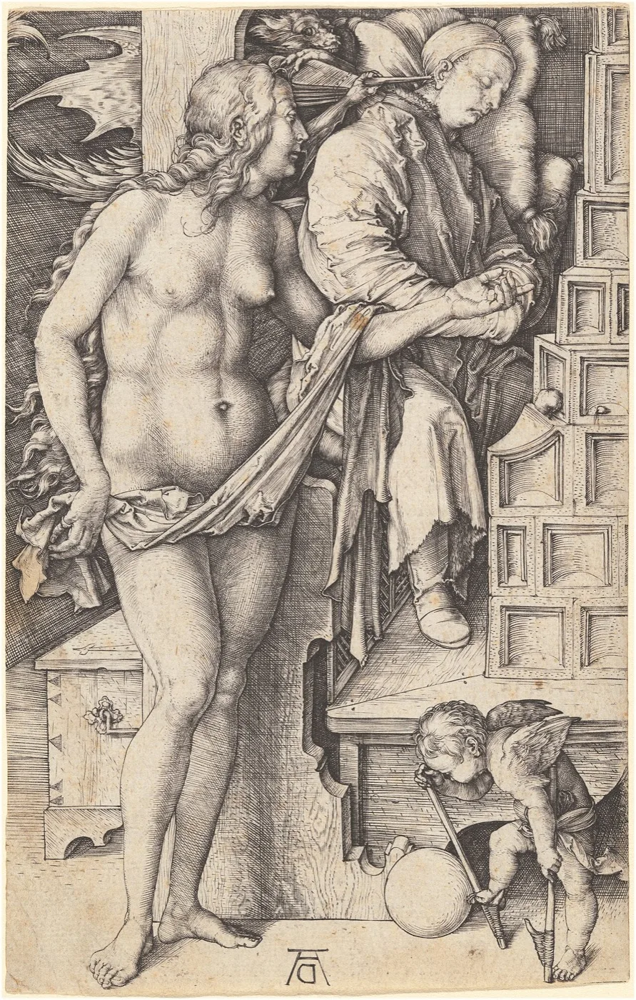

Dürer and the birth of the modern artist


01
About
Dürer turned the image into a measured, reproducible form of knowledge
This archive gathers the life, works, prints, self-portraits, travels and theoretical writings of Albrecht Dürer (1471–1528), and organises them around a single idea: Dürer transformed the image into a language of precision, transmission and knowledge.
Measured by the hand, multiplied by the press and carried across Europe, his line became a tool of observation as much as of beauty — at the crossroads of art and science.


02
Editorial note
"A body of work where the gaze becomes method, and the line becomes knowledge."
ARCHIV · not a quotation by Dürer
04
05
Studies
Faces, beasts and devotions
From engraved saints to painted altarpieces, Dürer measured the visible world with the same exacting line.
Life
1471–1528
City
Nürnberg
Master prints
1513–14
06
collections
Reference collections
The public collections that hold the original sheets and panels.
Louvre
British Museum
Albertina
Museo del Prado
The Met
Alte Pinakothek




Italy, Venice and the theory of beauty
Two journeys south reshaped Dürer's sense of colour, antiquity and proportion — and his ambition for the status of the artist.

Documented sources
Every sheet linked to a public collection.
Museum-grade reading
Editorial texts written for the archive.
Major works in depth
Melencolia, the Knight, the Rhinoceros and more.
Prints & treatises
From the Apocalypse to the Four Books on Proportion.
A developing catalogue
New works and editions added over time.